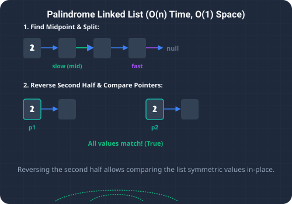

What We're Solving & Sequential Symmetry
Verifying symmetry across linear data streams is a common task in algorithmic logic. The Palindrome Linked List problem asks us to determine if a given singly linked list reads the same forward and backward.
For example, the list 1 -> 2 -> 2 -> 1 -> null represents a palindrome, whereas the list 1 -> 2 -> 3 -> null does not.
The primary constraint of this problem is to achieve our result in linear O(n) time complexity using only constant O(1) auxiliary space. Because a singly linked list lacks backward pointers, traversing backward is impossible without modification, forcing us to use a creative combination of pointer manipulation techniques.

To build intuition for the optimal in-place check, imagine a word written on a strip of paper:
- Folding in Half: To check if the word is a palindrome, you can fold the strip of paper exactly in the middle.
- Top vs Bottom Comparisons: Once folded, you compare the letter on the top page with the corresponding letter directly beneath it. If every letter matches, the word is symmetric.
- Applying to Lists: In a linked list, we can perform this "fold" dynamically. First, we locate the exact middle of the list. Then, we reverse the second half of the list in-place. Finally, we traverse both halves simultaneously from their respective starting heads, comparing node values step-by-step.
The Strategy
1. Auxiliary Stack Approach (O(n) Space)
A simple way to verify symmetry is to copy all node values into a list or push them onto a stack. We then read the list or pop values from the stack to verify if they match the original sequence. While simple, this approach requires O(n) extra memory, which violates the strict O(1) space requirement.
2. Middle Reversal Optimization (O(n) Time, O(1) Space)
We can solve the problem in-place using three coordinated phases:
- Find the Middle: We use the two-pointer fast and slow technique (where
fastmoves at double the speed ofslow). By the timefastreaches the end of the list,slowis guaranteed to be at the middle node. - Reverse the Second Half: We reverse the entire second half of the list starting from the
slownode. - Compare Halves: We initialize two pointers: one at the start of the first half (
head) and one at the head of the reversed second half. We compare their values node-by-node. If any values mismatch, the list is not a palindrome.
O(n) time using only O(1) memory.
Detailed Trace Walkthrough
Let's trace this middle reversal algorithm step-by-step on 1 -> 2 -> 2 -> 1 -> null:
- Step 1 (Locate Middle):
- Initialize
slowandfastpointers athead(node1). - Iteration 1:
slowadvances to the second node2;fastadvances two steps to the third node2. - Iteration 2:
slowadvances to the third node2;fastadvances tonull. - The loop terminates. The middle of the list is at
slow(the third node2).
- Initialize
- Step 2 (Reverse Second Half):
- We call our list reversal helper on the second half starting at
slow(2 -> 1 -> null). - The helper returns the reversed chain:
1 -> 2 -> null.
- We call our list reversal helper on the second half starting at
- Step 3 (Compare Halves):
- Set
firstHalf = head(node1) andsecondHalfto the reversed head (node1). - Compare values:
- Step 3a:
firstHalf.val (1) == secondHalf.val (1). Match. Advance pointers:firstHalfbecomes node2,secondHalfbecomes node2. - Step 3b:
firstHalf.val (2) == secondHalf.val (2). Match. Advance pointers:secondHalfbecomesnull.
- Step 3a:
- Since
secondHalfisnull, the verification completes successfully.
- Set
- Step 4 (Completion): All compared values matched, so the method returns
true.
Code Highlights & Explanations
Key sections of our Java implementation:
while (fast != null && fast.next != null)ensures correct slow/fast pointer traversal for both even and odd length lists.reverseList(slow)inverts the link directions of the second half of the list in-place.firstHalf.val != secondHalf.valprovides an early exit, returningfalseas soon as a mismatch is detected.
Full Code Solution
Below is the complete, self-contained Java source code that solves this problem, featuring in-place middle reversal and comparison, along with a main test runner.
package io.practise.dsa;
public class PalindromeLinkedList {
public static class ListNode {
public int val;
public ListNode next;
public ListNode(int val) { this.val = val; }
}
// Optimized - Reverse 2nd Half + Compare - O(n)
public boolean isPalindrome(ListNode head) {
if (head == null || head.next == null) return true;
// Find middle
ListNode slow = head, fast = head;
while (fast != null && fast.next != null) {
slow = slow.next;
fast = fast.next.next;
}
// Reverse second half
ListNode secondHalf = reverseList(slow);
// Compare both halves
ListNode firstHalf = head;
while (secondHalf != null) {
if (firstHalf.val != secondHalf.val) return false;
firstHalf = firstHalf.next;
secondHalf = secondHalf.next;
}
return true;
}
private ListNode reverseList(ListNode head) {
ListNode prev = null;
while (head != null) {
ListNode next = head.next;
head.next = prev;
prev = head;
head = next;
}
return prev;
}
public static void main(String[] args) {
PalindromeLinkedList solver = new PalindromeLinkedList();
ListNode head = new ListNode(1);
head.next = new ListNode(2);
head.next.next = new ListNode(2);
head.next.next.next = new ListNode(1);
System.out.println("--- Palindrome Linked List Demonstration ---");
System.out.println("Is Palindrome: " + solver.isPalindrome(head));
}
}Conclusion & Takeaways
Checking linked list symmetry in constant space highlights the utility of multi-pointer coordination and temporary link reversals. By finding the middle node, reversing the second half, and sweeping forward, we avoid auxiliary storage arrays and solve the problem in a single linear pass.